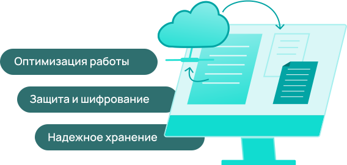

Электронный
документооборот

Электронный документооборот — это система, позволяющая перевести документы в цифровой формат и управлять ими удаленно. Принцип работы ЭДО не отличается от традиционного: документы составляются, подписываются сначала одной стороной, затем другой. Разница заключается лишь в том, что весь процесс происходит онлайн, а подпись от руки заменяется цифровой подписью. При этом переводить подписанный документ в бумажный формат необходимости нет, так как каждый контрагент в любое время сможет скачать его из архива сервиса.
Преимущества ЭДО
Исключение «человеческого фактора»
Электронные документы не могут затеряться, сгореть или порваться, как бумажные, так как сохраняются на серверах системы в виде архива. При желании их в любое время можно найти по названию или дате подписания.
Оптимизация работы организации
Сервис ЭДО позволяет отслеживать все действия, совершенные с документом, а также своевременно подписывать договора с контрагентами, заказчиками и клиентами, что значительно ускоряет все рабочие процессы в компании.
Защита от ошибок и несанкционированного использования
Умная программа не позволит, например, неправильно поставить дату. Также она не допустит к подписанию документов неуполномоченных лиц. Электронный документооборот шифрует файлы, чтобы они не могли использоваться в мошеннических целях.
Как ЭДО Диадок улучшит качество работы компании
Одним из ведущих лидеров рынка стал сервис электронного документооборота Диадок. Его основное преимущество заключается в том, что он позволяет создавать интеграционные решения с большинством существующих учетных систем и подключаться к любой информационной системе.
Диадок позволяет:
Передавать налоговые декларации, товарные накладные и счета, подписывать договоры, акты сверки платежные поручения.
Документы контрагентам доставляются мгновенно, а узнать дальнейшие действия, связанные с ними, поможет статус.
Помимо этого, в Диадоке предусмотрен интеграционный модуль для 1С, что дает возможность обмениваться документацией с заказчиками, клиентами, партнерами непосредственно из этой программы без выхода в стороннее приложение.
Diadoc — умный сервис, в котором, помимо прочего, предусмотрена система маршрутизации, направляющая входящие документы сразу в нужное подразделение организации.
Также Диадок позволяет отправлять и получать документацию от контрагентов, пользующихся другими системами ЭДО. Одновременно можно работать с большим объемом документов.
Нужна помощь с выбором и покупкой?
Оставьте заявку и мы поможем подобрать тариф и ответим на все ваши вопросы.
Какую выгоду получит ваша компания при переходе на ЭДО
Руководитель:
- сокращение административных расходов. Не придется переплачивать за работу курьеров и архивиста;
- снижение репутационных рисков. Документы от вашей компании всегда будут подписываться в срок;
- преимущество перед конкурентами. Повышение работоспособности сотрудников, возможность учувствовать в государственных торгах;
- снижение вероятности получения штрафов, например, за не вовремя поданную декларацию в ФНС.

Бухгалтерия:
- возможность подписывать единовременно большой объем документов. Это могут быть акты, ежемесячные счета и т.д.;
- доступ ко всем подписанным документам на постоянной основе. Их в любое время можно найти в архиве системы, где они сохраняются автоматически;
- отправляя документы в ФНС через ЭДО Диадок можно не беспокоиться о переводе их в формат xml, он устанавливается по умолчанию;
- отсутствие задержек и путаницы. Больше не нужно отправлять бумажные документы контрагентам и ждать их обратно.

Отдел кадров:
- упрощенный документооборот с удаленными работниками, вахтовиками и сотрудниками филиалов;
- упрощенная подача расчетных листков, отчетов о командировке, заявлений на отпуск или на перевод;
- принятие на работу сотрудников через трудовой договор, подписанный цифровой подписью;
- КЭДО дает возможность отправлять и получать документы в той же системе, где ведется кадровый учет: 1С, БОСС-Кадровик, SAP и т.д.

Как перейти на ЭДО
Каждый сотрудник, который в перспективе будет приглашен в систему, должен получить квалифицированную либо неквалифицированную (здесь все зависит от должностных полномочий) цифровую подпись.
Выберите оператора ЭДО и тариф, который наиболее подходит вашей компании. Заключите с оператором официальный договор. Или же проведите интеграцию с 1С: ЭДО. Настроить услугу можно в последних версиях продуктов 1С.
Пригласите сотрудников в систему ЭДО. При необходимости проведите обучающий инструктаж, чтобы научить формировать, отправлять и получать, отслеживать статус, находить, аннулировать и редактировать документы.